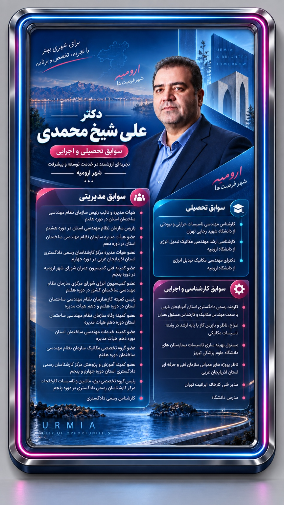

شفافیت بودجه؛ نقشهای روشن برای تصمیمهای شهر
مدیریت شهری زمانی اعتماد میسازد که شهروندان بدانند منابع عمومی کجا و چگونه هزینه میشود.
پایگاه خبر، گفتوگو و مشارکت شهروندی حامیان دکتر علی شیخ محمدی؛ جایی برای شنیدن صدای محلهها و ساختن برنامهای مبتنی بر تخصص.

مدیریت شهری زمانی اعتماد میسازد که شهروندان بدانند منابع عمومی کجا و چگونه هزینه میشود.
راهحل مسائل شهری از شنیدن صدای محلهها و تبدیل پیشنهادهای مردم به برنامه اجرایی میگذرد.
پیشنهادهای کاربردی در حوزه حملونقل، محیطزیست، ایمنی و اقتصاد شهری گردآوری میشود.
خلاصه خبرها، روایت محلهها، وعدههای قابلسنجش و دیدگاه کارشناسان در قالبی خلاق و خواندنی.
رویدادها، مشکلات و پیشنهادهای محله خود را برای بررسی هیئت تحریریه ارسال کنید.